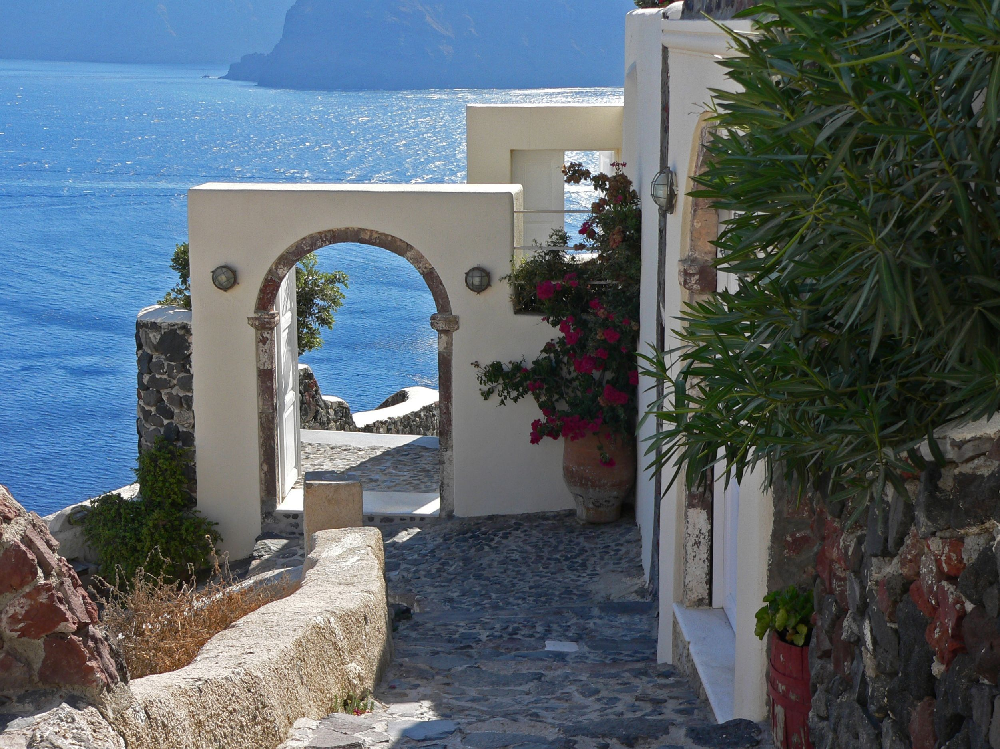
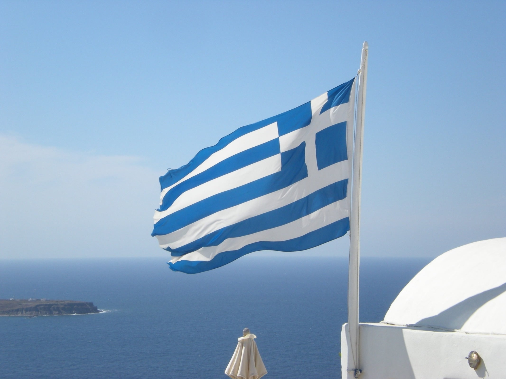
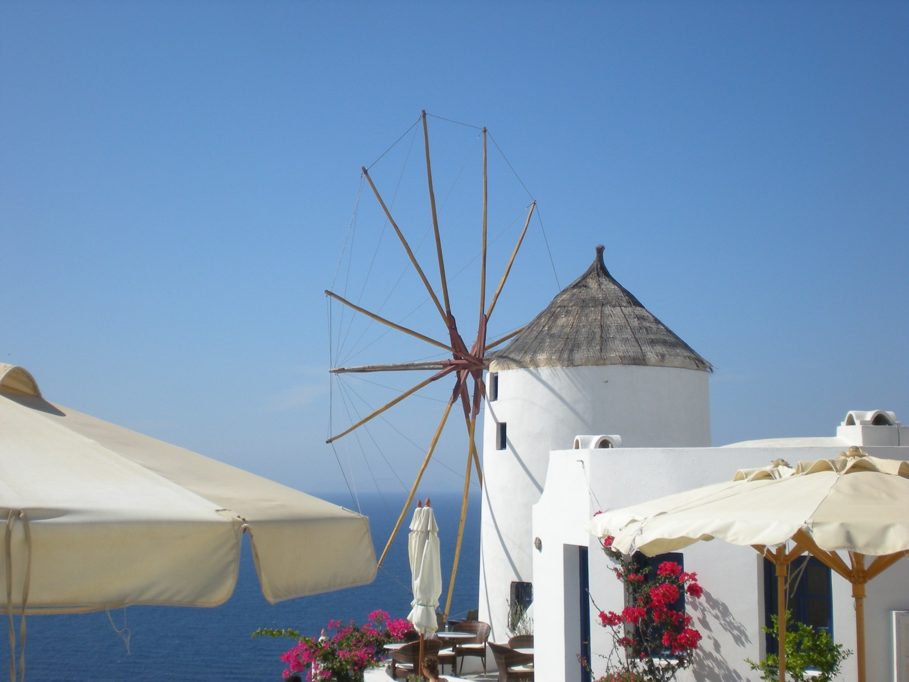

Entdecken Sie spannende Fakten und interessante Informationen über die Insel Santorini!



Auf Santorini wird hauptsächlich Griechisch gesprochen. In touristischen Orten sprechen viele Menschen auch Englisch.
Santorini ist eine griechische Insel in der Ägäis und gehört zu den Kykladen.
Santorini ist berühmt für seine weißen Häuser mit blauen Kuppeln, wunderschöne Sonnenuntergänge und beeindruckende Ausblicke aufs Meer.
Santorini hat ein mediterranes Klima mit heißen Sommern und milden Wintern.